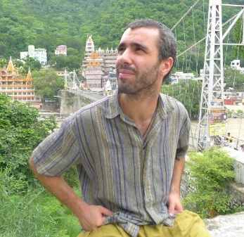

Computational Systems Biology, Complex Systems & AI
Life Sciences Department, Barcelona Supercomputing Center

I build computational models to understand how cells behave, how diseases spread, and how cities shape the health of the people living in them. My work sits at the intersection of systems biology, epidemiology, and data science — connected by a shared interest in complex systems, and the tools needed to simulate and analyse such as ML/AI and ABM.
At the Barcelona Supercomputing Center I develop multiscale models of cancer and cellular signalling, and apply geo-spatial and mobility analysis to study epidemic dynamics and urban health. Across both areas I work closely with HPC infrastructure to run large-scale simulations and model exploration workflows.
Outside the lab I enjoy time with my family, music, reading, and any excuse to be outdoors — sea, mountains, or forest.